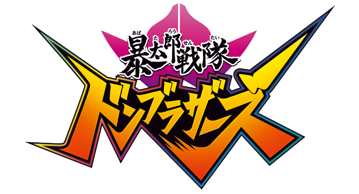
CHƯA TỪNG XUẤT HIỆN -- AVATARO SENTAI DON BROTHERS
DÒNG NƯỚC HOA SUPER SENTAI CÓ MỘT KHÔNG HAI !

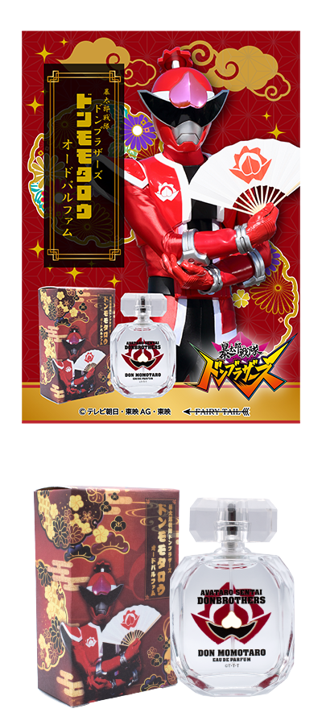
* Nước Hoa
* Don Momotarou
* Dung tích: 60ml
* 750.000 VNĐ(đã bao gồm thuế)
" ĐÓ LÀ CÁCH MÀ TA CÓ MỘT MỐI QUAN HỆ !"
Chai nước hoa được lấy ý tưởng từ Avatar Change của Momoi Taro - Don Momotarou. Hương đầu của chanh dây, hương nghệ tây và chanh sẽ làm bạn cảm thấy nồng nàn, đầy sức sống, nhiệt huyết như đang được khiêng trên một chiếc kiệu hoa và bạn như có thể thấy Don Momotarou " hào nhoáng ", chiến đấu cùng những tiên nữ nhảy múa. Hương giữa tươi mát của hoa lạc tiên và gỗ đàn hương kết hợp với nhau tạo nên hình ảnh của Taro - chàng trai thể hiện những sự siêu phàm trong mọi việc cậu làm, kĩ năng kiếm thuật và lối hành động có chút " khinh thường đồng đội"." Wua hahahaahah !".
Hương thơm: Red Passion
Hương đầu: Chanh, Chanh dây, Nghệ tây
Hương giữa: Đào, Hoa oải hương, Hoa đam mê, Hoa lạc tiên
Hương cuối: Trái cây khô, Gỗ đàn hương, Gỗ xạ hương
* Nước Hoa
* Saru Brothers
* Dung tích: 60ml
* 750.000 VNĐ(đã bao gồm thuế)
[ TÔI LÀ MÔT KẺ LẬP DỊ BẨM SINH...CÓ VẺ NHƯ VẬY. TÔI KHÔNG NHẬN THỨC ĐƯỢC ĐIỀU ĐÓ ]
Một loại nước hoa lấy cảm hứng từ SaruBrothers khi Avatar Change của Shinichi Saruhara. Hương đầu của hoa sen xanh và hoa long não gợi nhớ đến màu chàm trái ngược với hình ảnh của Shinichi, anh là một chiến binh màu xanh với cái mông đỏ giống như một con khỉ chuyên chiến đấu bằng cách sử dụng cánh tay mạnh mẽ của mình. Hương giữa và hương cuối được lấy cảm hứng từ những bài thơ haiku mà Shinichi viết trong tác phẩm, và được thêm vào mùi hương tinh tế của mực bút.
Hương thơm: Blue Haiku
Hương Đầu: Cam Bergamot, Đinh hương
Hương giữa: Hoa sen xanh, Hoa huệ, Long não, Dầu hoa cam
Hương cuối: Mực Nhật Bản, Xạ hương
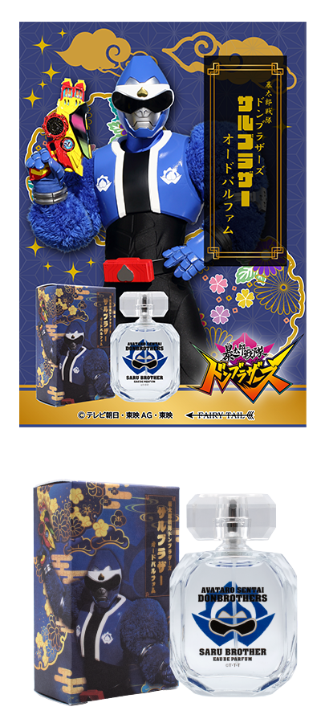
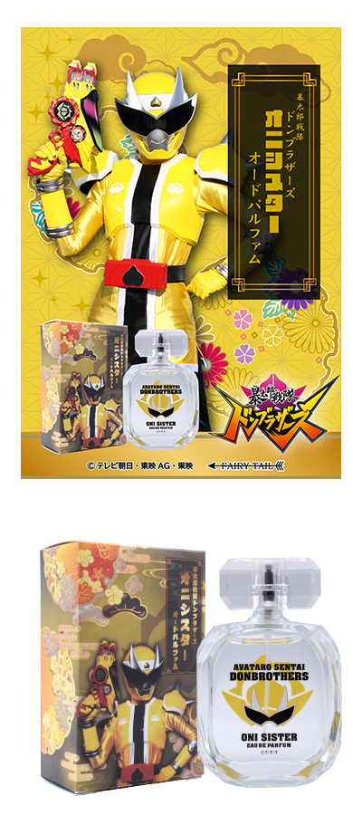
* Nước Hoa
* Oni Sister
* Dung tích: 60ml
* 750.000 VNĐ(đã bao gồm thuế)
[" Tôi không thể làm điều đó !" ]
Hình ảnh Oni-Sister khi Avatara Change của Haruka Kito là một mùi hương cam quýt tươi mát mang đến cho bạn cảm giác dễ thương trong sự tươi mát bùng nổ. Nốt hương thơm, có mùi hương tươi mát và dễ thương kéo dài đến cuối, cô đã giành được giải thưởng truyện tranh để đạt được giấc mơ của mình, nhưng mọi thứ đã thay đổi khi cô có được khả năng biến thành OniSister làm cô ấy có một cặp sừng bí ẩn. Haruka làm việc bán thời gian tại một quán cà phê Donbura, tiếp tục vẽ truyện tranh một cách rực rỡ và tràn đầy năng lượng mà không từ bỏ ước mơ của mình, đồng thời chiến đấu dũng cảm với tư cách là thành viên của Don Brothers.
Hương thơm: Yellow Sun
Hương đầu: Táo, Bưởi
Hương giữa: Hoa nhài, Hoa hồng, Hoa violet
Hương cuối: Xạ hương, Hổ phách, Rêu sồi
* Nước Hoa
* Inu Brothers
* Dung tích: 60ml
* 750.000 VNĐ(đã bao gồm thuế)
[ TÔI KHÔNG MUỐN BỊ BẮT...TÔI VÔ TỘI !! ]
Một loại nước hoa lấy cảm hứng từ InuBrothers từ Tsubasa Inuzuka khi Avatar Change. Mùi hương đen sành điệu của nốt đầu là hình ảnh của Inu thiện chiến thần tốc tận dụng sự nhanh nhẹn, nhẹ nhàng.Nốt hương giữa biến thành một mùi hương sảng khoái và hoang dã, dựa trên hình ảnh của Tsubasa Inuzuka, một kẻ chạy trốn đang chạy trốn sau khi bị buộc tội sai. Sự khẳng định của Amber trở nên mạnh mẽ hơn, và lưu ý cuối cùng là Tsubasa ở lại một thành phố mà không chạy trốn khi bị cảnh sát truy đuổi vì anh ấy muốn đoàn tụ với người yêu đã mất tích 'Natsumi'.
Hương thơm: Black Inu
Hương Đầu: Cam, Quýt, Muối
Hương giữa: Hương biển
Hương cuối: Hổ phách, hoắc hương, gỗ tuyết tùng
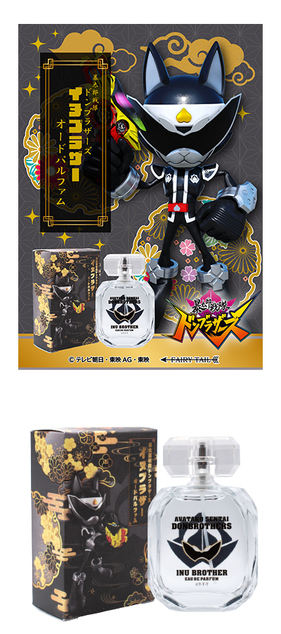
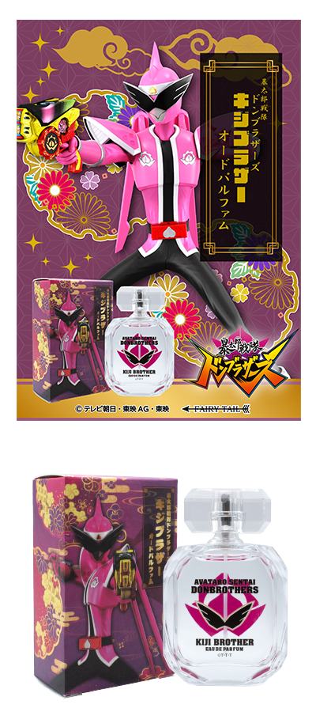
* Nước Hoa
* Kiji Brother
* Dung tích: 60ml
* 750.000 VNĐ(đã bao gồm thuế)
" TÔI KHÔNG GIỎI GIANG... NHƯNG TÔI CÓ MIHO !!!"
Nước hoa này được dựa trên hình ảnh của Kiji Brother khi Tsuyoshi thực hiện Avatar Change. Chiến binh nam mang màu hồng đầu tiên của Super Sentai, cao 220 cm, có vợ và công việc ổn định. Hương giữa chuyển thành mùi hương ấm áp kết hợp giữa lá trà và hoa nhài là hình ảnh người vợ của Miho, tình yêu của Miho và hình ảnh của Kijino đang nghĩ về vợ mình - Miho. Hương giữa là sự kết hợp thanh mát của hoa hồng và mùi cam quýt, nó cũng có mùi hăng và khi người vợ quý giá của mình gặp nguy hiểm, anh ta trở nên vô cùng tức giận và biến thành một con quỷ, bạn có thể cảm nhận được bản chất hai mặt của Kijino - một kẻ tàn nhẫn. Nốt cuối chuyển sang một mùi hương nhẹ nhàng và sống động, dựa trên hình ảnh Kijino, người chiến đấu với tư cách là thành viên của Don Brothers, đi làm với sự khuyến khích của người vợ xinh đẹp và dịu dàng, Miho.
Hương thơm: Pink Kiji
Hương đầu: Chanh, cam bergamot, chanh xanh
Hương giữa: Lá trà, hoa nhài, hoa hồng
Hương cuối:Gỗ trắng, xạ hương trắng
* Nước Hoa
* Black Zenkaiser
* Dung tích: 60ml
* 750.000 VNĐ(đã bao gồm thuế)
Dòng nước hoa này được lấy cảm hứng từ Zenkaiser Black khi Change Zenkai bởi chủ nhân của quán cà phê Donbura - Kaito Goshikida, bằng cách sử dụng Don Blaster và Sentai Gear. Hương đầu cam quýt mát lạnh dựa trên hình ảnh của Sukehito Goshikida - một người bí ẩn thường âm thầm làm việc và quản lý các điểm kê của những người bạn đồng hành của Don Momotaro và đôi khi đưa ra lời khuyên cho họ. Mùi hương trong suốt như nước, dựa trên hình ảnh của Sukehito Goshikida - Zenkaiser Black, người đầu tiên nói với Taro về bản thân mình, " một người sinh ra là anh hùng , chiến đấu như một anh hùng và tiếp tục là anh hùng. " Nốt cuối cùng được bao bọc trong sự ngọt ngào gợi cảm là Zenkaiser Black, thể hiện sự bí ẩn của Zenkaiser Black, thứ được bao phủ trong bí ẩn, chẳng hạn như mục đích chuyển sang chiến đấu và thu thập Avatar Gear của Super Sentai.
Hương thơm: Mysterious Black
Hương Đầu: Cam, Cam bergamot, Chanh
Hương giữa: Hương biển, Hoa oải hương, Phong lữ
Hương cuối: Hổ phách, Cỏ vetiver, Hoắc hương
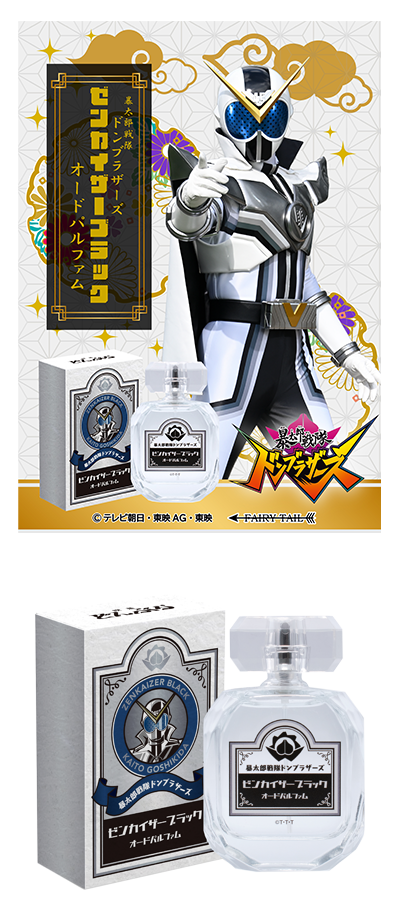
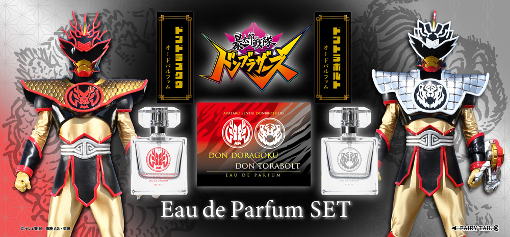
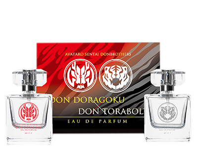
* Nước Hoa
* Don Dragoku & Don ToraBolt
* Dung tích: 50ml gồm 2 chai
* 1065.000 VNĐ(đã bao gồm thuế)
Jiro Momotani - một người đàn ông máu nóng từ nông thôn đến Tokyo để thay thế Taro, đã thức tỉnh sức mạnh của một chiến binh và Avatar Change trở thành Don Dragoku và Jiro Momotani đã thức tỉnh sau sự cạnh tranh với Taro và thay đổi hình đại diện của mình - Don Trabolt.
※ Chính thức mở bán vào ngày 10 tháng 12.
* Nước Hoa
* Don Dragoku
[ TA LÀ MỘT ANH HÙNG BẨM SINH !! ]
Một chai nước hoa lấy cảm hứng từ Avatar Change của Jiro Momotani - Don Dragoku. Hương đầu tươi mát và sảng khoái của cam quýt dựa trên hình ảnh của Jiro Momotani - một người đàn ông nóng tính đến Tokyo để thay thế cho Taro, người có rất nhiều giả định và đang ở phong độ tốt hơn hoặc tồi tệ hơn của riêng mình. Nốt hương giữa, kết hợp giữa vị ngọt của quả đào và quả lý gai với một mùi hương gợi cảm, xuất hiện trước mặt Don Brothers - người đã rời làng Kaguo và đấu tranh trí óc để trở thành người anh hùng mà Jiro ngưỡng mộ từ thời thơ ấu. Bạn có thể cảm nhận được bản chất rắc rối của Jiro được thể hiện. Hương thơm của gỗ đàn hương và xạ hương kết hợp với hương cam quýt sảng khoái, và nốt hương cuối cùng, chuyển thành một mùi hương mạnh mẽ nhưng êm dịu. Đó là khi cậu biết người bạn thời thơ ấu ở Kakamura là ảo ảnh do Terasaki tạo ra, và Terasaki là thú nhân. Khi đang suy sụp tột độ, cậu được Yami Jiro động viên và 'tự bước đi trên đôi chân của mình', hai Jiro đã hòa làm một.
Hương Thơm: Glorious Warrior
Hương Đầu: Cam, Quả Yuzu, gas
Hương giữa: Đào, Cassis, Blackcurrant
Hương cuối: Xạ hương trắng, Gỗ đàn hương
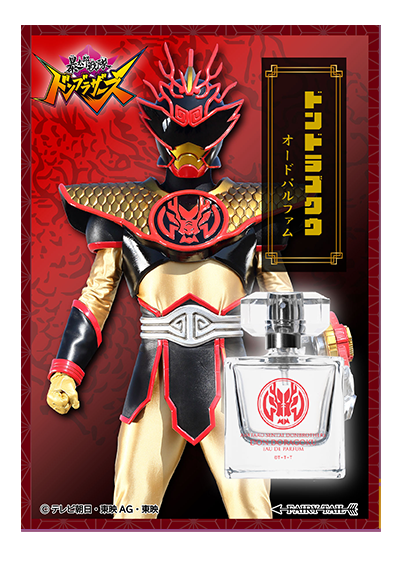
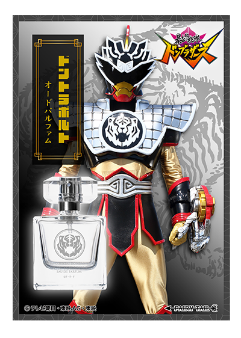
* Nước Hoa
* Don ToraBolt
" TA KHÔNG THẤY VUI...TA ĐÃ Ở TRONG NGƯỜI SUỐT THỜI GIAN QUA, VÀ NGƯƠI CŨNG Ở TRONG TA..."
Một nhân cách khác có tên 'Dangerous Jiro' là một chai nước hoa lấy cảm hứng từ Don Torabolt - một chiến binh avatar màu bạc, người đã thức tỉnh sau sự cạnh tranh của mình với Taro và nổi cơn thịnh nộ như một con hổ. Mùi hương gợi cảm mâu thuẫn của hoa oải hương và mùi cam tươi mát va chạm với nhau để tạo ra một nốt hương đầu bóng bẩy. Sự kiêu ngạo và lòng tự trọng của Jiro đạt đến điểm tới hạn, nhấn chìm tính cách tươi sáng thường ngày của anh ấy. Ngược lại, Jiro đã tạo ra một nhân cách khác, 'Jiro nguy hiểm ', kẻ tấn công cả bạn bè và kẻ thù trong khi thốt ra một giọng trầm và lớn. Hương thơm ngon ngọt và mạnh mẽ của dầu hoa cam được thêm vào nốt hương giữa, rất tốt trong việc tấn công và bạn có thể tưởng tượng ra phong cách chiến đấu cuồng nộ của Dontrabolt, gần như liều lĩnh và tấn công bất kỳ kẻ thù đáng gờm nào. Nốt cuối cùng, nhấn mạnh sự gợi cảm và biến thành một mùi hương nhẹ nhàng, khuyến khích Jiro - người đang chán nản Kakamura, giao tiếp với anh ấy và những suy nghĩ của 'Jiro khác' - người đã quyết định trở thành một với Jiro, người đã ở bên anh ấy trong nhiều năm.
Hương thơm: Brave Warriors
Hương đầu: Hoa oải hương, Cam, Dầu hoa cam
Hương giữa: Hoa nhài, Hoa nhài, Hoa trắng
Hương cuối: Vani, Đậu Tonka, Xạ hương